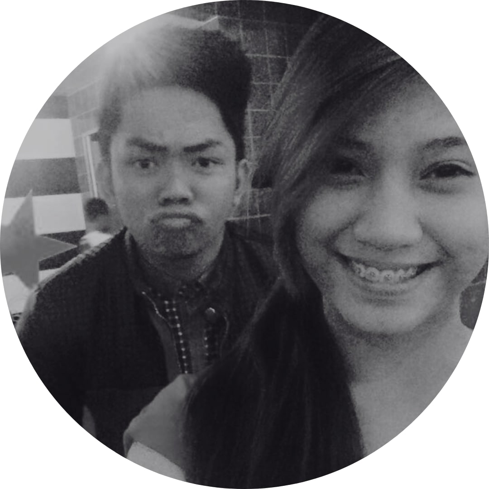
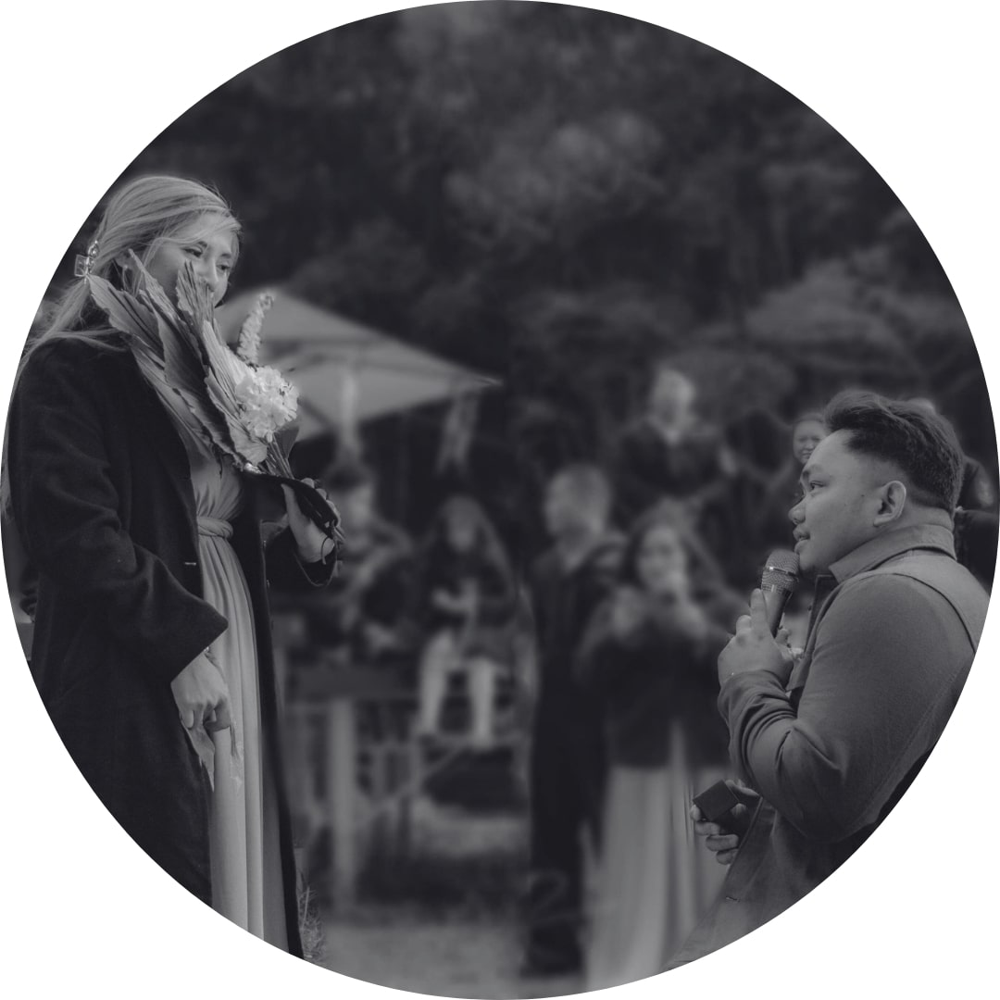

<div class="wrapper">
  <div class="wrapper__main">
    <div class="content">
      <div class="image">
        
      </div>
      <div class="text">
        <p class="title">How we first met</p>
        <p>
          In the year of 2014, when Thor was a youthful 19 and Aia an earnest
          18, a series of serendipitous events led to the weaving of a love
          story so unique that it was as if the stars had conspired to write it
          themselves. This is the story of Thor and Aia, a tale not just of
          love, but of destiny, friendship, and the beautiful unpredictability
          of life. <br />
          <br />
          It all started with a casual conversation between college classmates.
          Thor, known among his friends for his easygoing nature and infectious
          laughter, was introduced to the concept of a challenge by his friend
          Peter. Peter, who had recently met Aia through a common friend,
          described her as the serious type – a woman of substance, grace, and
          an intriguing aura of mystery. Intrigued by Peter's description and
          nudged by the playful nature of a challenge, Thor decided to step into
          the unknown. Little did he know, this decision was about to change his
          life forever.
          <br />
          <br />
          Aia and Thor's first encounter was nothing short of a scene from a
          beautifully directed play. It happened at an event where the music
          played just right, and the crowd seemed to part just for them to see
          each other. There was an exchange of glances, a few shy smiles, and an
          exchange of numbers – the first thread of their story was spun. <br />
          <br />
          But the narrative of Thor and Aia wasn't one to unfold quickly. It
          took a whole month of patient persuasion before Aia accepted Thor's
          invitation to watch a movie. And there was a twist – Aia came with a
          friend, her Maid of Honor, Wilnona. This wasn't just a date; it was a
          scene that depicted the carefulness and depth of Aia, qualities that
          Thor grew to admire deeply.
        </p>
      </div>
    </div>
    <p>
      From that movie outing, their story progressed, one day at a time. They
      shared laughs, dreams, and eventually, without even realizing it, they
      began sharing their hearts. The words "I love you" started to find their
      way into conversations, naturally, like they had always belonged there.
      <br />
      <br />
      Now, 9 years later, even after facing countless struggles and moments when
      giving up seemed like the only option, Thor and Aia stand stronger and
      more in love than ever. Their journey was not always smooth, but every
      challenge they faced only fortified their bond, turning it into a
      testament of unwavering commitment and love. <br />
      <br />
      Today, as they stand on the threshold of a new chapter, ready to exchange
      vows and intertwine their lives forever, they look back at the journey
      that brought them here. It was a journey filled with friendship,
      challenges, patience, and most importantly, love. They stand together,
      ready to step into the future, knowing that the best parts of their story
      are yet to be written. And as for Peter, he smiles in the background, a
      silent witness to the beautiful outcome of a challenge that turned into a
      lifetime of love.
    </p>

    <hr class="mt-4" />

    <div class="content mt-5">
      <div class="image">
        
      </div>
      <div class="text">
        <p class="title">The proposal</p>
        <p>
          If every love story is unique, ours is truly one for the books. After
          navigating through eight wonderful years together, we found ourselves
          on the cusp of a new chapter, one that started with a question and a
          ring.<br />
          <br />

          In hindsight, the signs were as clear as day. Before our trip to
          Japan, hints were playfully dropped like petals in the wind.
          Conversations about rings, theme songs, and even a casual detour to
          get a ring size under the pretense of helping a cousin—all were pieces
          of a puzzle we were putting together without even realizing it.<br />
          <br />

          The moment itself was as surreal as it was beautiful. Amidst the
          backdrop of our shared adventures, the question was asked. It wasn't
          just a proposal, but a culmination of every smile shared, every
          challenge faced, and every dream dreamt together. The surprise was
          guarded like a precious secret, known only to ourselves, our sisters,
          and our cousins.<br />
          <br />

          Saying "Yes" felt like stepping into a new world, one where every
          moment is a promise and every day a celebration of our journey. Our
          engagement in Japan was more than just a scenic memory; it was a
          testament to our story, a tale of laughter, support, and unwavering
          love.<br />
          <br />
        </p>
      </div>
    </div>
    <p>
      As we share this chapter of our story with you, we're not just recounting
      an event; we're opening the pages of our lives, inviting you into the
      narrative of a love that's been our guiding star. We eagerly anticipate a
      future painted with the colors of our dreams, a canvas where every day is
      a testament to our bond.<br />
      <br />

      Together, with hearts intertwined and eyes set on the many adventures that
      lie ahead, we step forward into this new chapter, a testament to a love
      that grows deeper with every passing moment.<br />
      <br />
    </p>
  </div>
</div>
